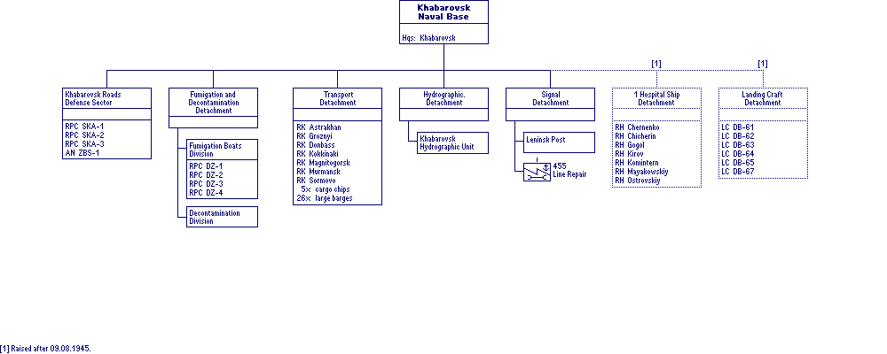

World War II Armed Forces — Orders of Battle and Organizations
Last Updated 19.08.2015
Soviet Armed Forces
In cooperation with Marek Suplat
Khabarovsk Naval Base
, Amur Flotilla, Far East Command
9 August 1945
